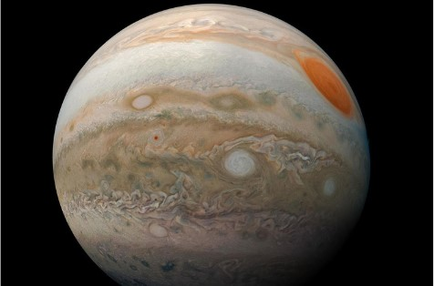
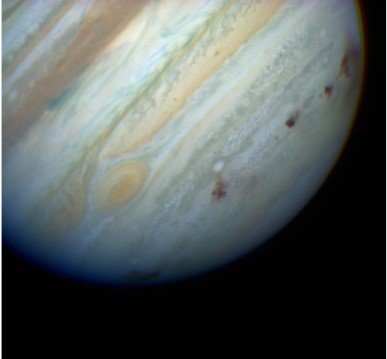
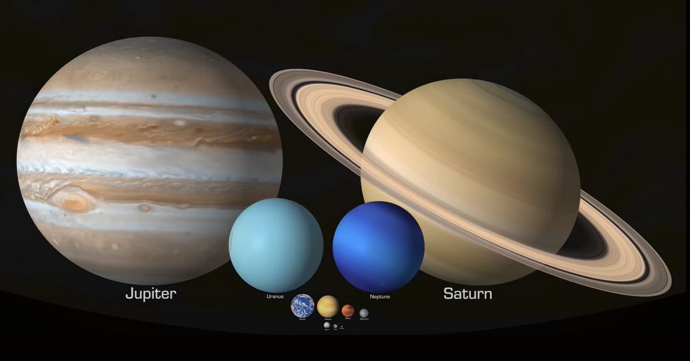

A Brief History Behind Planet Jupiter
Jupiter is the 5th planet...

Above shows an image of the marks...
Other Facts About Planet Jupiter

You can fit 1,000 Earths into Jupiter...
- Jupiter was named after the king of the gods...
- Jupiter is mostly made of hydrogen and helium gas...
Overall Conclusion
While we may never be able to see what's inside Jupiter...
Written by Adam Sharifeh